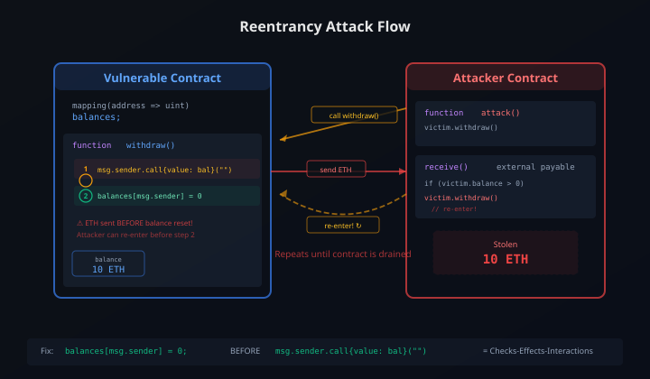

スマートコントラクト設計パターン ― 安全で拡張可能なコントラクトを書くための実践ガイド

前回はSolidityで「貯金箱」（PiggyBank）コントラクトを書いた。あれは入門としては十分だが、本番環境に出すには問題だらけだ。今回はPiggyBankの限界を出発点に、設計パターン・脆弱性対策・テスト・監査という4つの柱で「安全なコントラクトの書き方」を体系的に学ぶ。Boltには最新ツール動向を補足してもらう。
PiggyBankの「その先」へ
前回の記事で書いたPiggyBankコントラクトを振り返ろう。
contract PiggyBank {
address public owner;
constructor() {
owner = msg.sender;
}
function deposit() public payable {
require(msg.value > 0, "Must send some ETH");
}
function withdraw() public {
require(msg.sender == owner, "Only owner");
payable(owner).transfer(address(this).balance);
}
}動くことは動く。だが、本番で使うには3つの致命的な限界がある。
| 限界 | 問題 | 解決策 |
|---|---|---|
| オーナー変更不可 | constructorでownerを固定。秘密鍵を紛失したら永久にロック | Ownableパターン |
| withdrawが危険 | transfer()はRe-entrancy攻撃に対して安全だが、ガスリミット2300の制約で将来的に問題になりうる | Checks-Effects-Interactions + Pull Payment |
| アップグレード不可 | バグが見つかっても修正できない。デプロイしたら終わり | Proxyパターン |
この記事では、これらの限界を克服するための4つの柱を順に学んでいく。
- 設計パターン ― 先人が確立した「安全な書き方」のテンプレート
- 脆弱性 ― 攻撃者がどこを狙うかを知る
- テスト ― コードが正しく動くことを証明する
- 監査 ― ツールと人の目で最終チェック
設計パターン基礎 ― OwnableとGuard Check
OpenZeppelin Ownableで書き直す
OpenZeppelinは、Solidityのセキュリティ監査済みライブラリ集だ。業界標準として広く使われている。PiggyBankの「オーナー管理」を、OpenZeppelinのOwnableを使って書き直してみよう。
// SPDX-License-Identifier: MIT
pragma solidity ^0.8.20;
import "@openzeppelin/contracts/access/Ownable.sol";
contract PiggyBankV2 is Ownable {
// Ownable(msg.sender) でデプロイ者をオーナーに設定
constructor() Ownable(msg.sender) {}
function deposit() public payable {
require(msg.value > 0, "Must send some ETH");
}
function withdraw() public onlyOwner {
(bool success, ) = owner().call{value: address(this).balance}("");
require(success, "Transfer failed");
}
function getBalance() public view returns (uint256) {
return address(this).balance;
}
}変更点を整理しよう。
is Ownable― OpenZeppelinのOwnableコントラクトを継承onlyOwner― Ownableが提供するmodifier。オーナー以外の呼び出しを自動で拒否transferOwnership()― Ownableに組み込まれた関数で、オーナーを別アドレスに変更可能renounceOwnership()― オーナー権限を完全に放棄する（誰もオーナーでなくなる）
たった1行のis Ownableで、オーナー管理の問題が解決する。車輪の再発明をせず、監査済みのコードを使うのが鉄則だ。
require / assert / revert の使い分け
Solidityにはエラーを発生させる方法が3つある。使い分けを理解しておこう。
| 構文 | 用途 | 未使用ガス |
|---|---|---|
require(条件, "メッセージ") |
入力値の検証、アクセス制御 | 返還される |
assert(条件) |
内部的に絶対に起きないはずの状態チェック | 返還される（0.8.0+） |
revert("メッセージ") |
複雑な条件分岐でのエラー処理 | 返還される |
Custom Errors（0.8.4+）
Solidity 0.8.4以降では、Custom Errorsが使える。文字列メッセージよりもガス効率が良い。
// 従来の書き方（文字列がコントラクトに保存される）
require(msg.sender == owner, "Only owner can call");
// Custom Errors（ガス効率が良い）
error NotOwner();
error InsufficientBalance(uint256 requested, uint256 available);
function withdraw(uint256 amount) public {
if (msg.sender != owner) revert NotOwner();
if (amount > address(this).balance)
revert InsufficientBalance(amount, address(this).balance);
// ...
}Custom Errorsはエラーの種類に応じた引数を持てるため、デバッグにも有用だ。
modifierの設計原則
modifierは「関数の前後に共通のチェックを差し込む」仕組みだ。便利だが、いくつかの原則がある。
- 1つのmodifierに1つの責務 ―
onlyOwnerは「オーナーであること」だけをチェックする - 状態変更は避ける ― modifierでは
requireやrevertによるバリデーションに留める - スタック過多に注意 ― modifierを何個も重ねると「Stack too deep」エラーになることがある
実践パターン ― Factory, Pull Payment, Proxy
Factoryパターン ― コントラクトがコントラクトを生む
PiggyBankを1つだけデプロイするなら問題ない。だが「ユーザーごとに専用の貯金箱を作りたい」場合はどうする？ ここでFactoryパターンが活きる。
contract PiggyBankFactory {
PiggyBankV2[] public banks;
event BankCreated(address indexed owner, address bankAddress);
function createBank() external {
PiggyBankV2 bank = new PiggyBankV2();
bank.transferOwnership(msg.sender);
banks.push(bank);
emit BankCreated(msg.sender, address(bank));
}
function getBankCount() external view returns (uint256) {
return banks.length;
}
}createBank()を呼ぶたびに新しいPiggyBankV2が生成され、呼び出し元がオーナーになる。eventでログを残しておけば、フロントエンドから作成履歴を追跡できる。
Push vs Pull Payment
スマートコントラクトでのETH送金には2つのアプローチがある。
| Push型 | Pull型 | |
|---|---|---|
| 仕組み | コントラクトが受取人にETHを送る | 受取人が自分でETHを引き出す |
| コード例 | payable(to).transfer(amt) |
withdrawableAmount[msg.sender] |
| リスク | 受取側のfallbackで処理が止まる可能性 | 低い |
| 使いどころ | 1対1の単純送金 | 複数人への分配、オークション |
原則：複数の送金先がある場合はPull型を使う。Push型で複数人に送金すると、1人の受取失敗で全体が巻き戻される「DoS（サービス拒否）」リスクがある。
Proxyパターン ― アップグレード可能なコントラクト
スマートコントラクトは一度デプロイすると変更できない――これは大原則だ。しかし現実にはバグ修正や機能追加が必要になる。Proxyパターンはこの問題を解決する。
仕組みは単純だ。ユーザーが呼び出すのはProxyコントラクト（データを保持）で、実際のロジックは別のImplementationコントラクトに委譲する。ロジックを更新したいときは、Implementationコントラクトを差し替えるだけでいい。
技術的にはdelegatecallという特殊な呼び出しを使う。delegatecallは「相手のコードを、自分のストレージで実行する」命令だ。
| Transparent Proxy | UUPS Proxy | |
|---|---|---|
| アップグレード権限 | Proxy管理者がProxy側で管理 | Implementation側にアップグレード関数を配置 |
| ガスコスト | やや高い（毎回管理者チェック） | 低い |
| セキュリティ | 管理者と利用者の関数衝突を防ぐ | Implementation側にupgrade関数がないと永久ロック |
| 推奨用途 | 大規模プロジェクト | ガスコストを最小化したい場合 |
Proxyパターンで最も注意すべきはストレージレイアウトの一貫性だ。ProxyとImplementationは同じストレージを共有するため、変数の宣言順を変えたり、既存の変数の型を変更すると、データが破壊される。アップグレード時には新しい変数を末尾に追加するだけにすること。OpenZeppelinの@openzeppelin/hardhat-upgradesプラグインにはストレージレイアウトの互換性チェック機能がある。
ERC標準 ― トークンとNFTの「共通言語」
ERCとは何か
ERC（Ethereum Request for Comments）は、Ethereumコミュニティが策定する標準仕様だ。「コントラクトはこのインターフェースを実装してください」という合意。これにより、異なる開発者が作ったトークンでもウォレットや取引所が統一的に扱える。
主要なERC標準
| 標準 | 種類 | 用途 | 特徴 |
|---|---|---|---|
| ERC-20 | Fungible Token (FT) | 通貨、ポイント | 全トークンが同一。1 USDT = 1 USDT |
| ERC-721 | Non-Fungible Token (NFT) | デジタルアート、ゲームアイテム | 各トークンが固有。tokenIdで区別 |
| ERC-1155 | Multi Token | ゲーム（武器+通貨を1つのコントラクトで） | FTとNFTを1つのコントラクトで混在 |
ERC-20の最小実装
ERC-20トークンの核心は、わずか6つの関数と2つのイベントだ。
// ERC-20が要求するインターフェース
interface IERC20 {
function totalSupply() external view returns (uint256);
function balanceOf(address account) external view returns (uint256);
function transfer(address to, uint256 amount) external returns (bool);
function allowance(address owner, address spender) external view returns (uint256);
function approve(address spender, uint256 amount) external returns (bool);
function transferFrom(address from, address to, uint256 amount) external returns (bool);
event Transfer(address indexed from, address indexed to, uint256 value);
event Approval(address indexed owner, address indexed spender, uint256 value);
}このインターフェースを満たしていれば、MetaMaskで表示でき、Uniswapで取引でき、どの取引所にも上場できる。標準に従うことで互換性が生まれる――これがERCの本質だ。
実装では、OpenZeppelinのERC20.solを継承するのが最も安全だ。
import "@openzeppelin/contracts/token/ERC20/ERC20.sol";
contract MyToken is ERC20 {
constructor() ERC20("MyToken", "MTK") {
_mint(msg.sender, 1000000 * 10 ** decimals());
}
}たった5行で、標準準拠のERC-20トークンが完成する。

ERC標準の最前線として注目すべきはERC-4337（Account Abstraction）です。従来のEOA（外部所有アカウント）に代わり、コントラクトウォレットを標準化する提案。ガス代の代理支払い、ソーシャルリカバリ、バッチトランザクションなどが可能になります。2024年以降、主要ウォレットが対応を進めており、「秘密鍵を失くしたら終わり」という課題が解消に向かっています。
「ERC-20を自前で実装してみたい」という気持ちはわかるが、本番では絶対にOpenZeppelinを使え。ERC20.solは世界中の監査を通過しており、独自実装には見えないバグが潜みやすい。学習目的で自分で書くのはいいが、メインネットに出すならOpenZeppelin一択だ。
脆弱性を知る ― 攻撃者の視点で考える
安全なコントラクトを書くには、攻撃者が何を狙うかを知る必要がある。ここでは代表的な4つの脆弱性を解説する。
1. Reentrancy（再入攻撃）
2016年のThe DAO事件で約360万ETH（当時約50億円）が流出した原因。前回の記事でも触れたが、ここではメカニズムを詳しく見ていこう。
脆弱なコード：
// 危険！ ETH送金後に残高を更新している
function withdraw() public {
uint256 bal = balances[msg.sender];
require(bal > 0, "No balance");
// Step 1: ETHを送る（ここで攻撃者のreceive()が呼ばれる）
(bool success, ) = msg.sender.call{value: bal}("");
require(success, "Transfer failed");
// Step 2: 残高をゼロに（攻撃者はStep 1で再びwithdrawを呼ぶ）
balances[msg.sender] = 0;
}攻撃者は自分のコントラクトのreceive()関数内で再びwithdraw()を呼ぶ。残高がまだゼロになっていないので、何度でもETHを引き出せてしまう。

修正版（Checks-Effects-Interactions）：
// 安全！ 残高更新を先に行う
function withdraw() public {
uint256 bal = balances[msg.sender];
require(bal > 0, "No balance"); // Checks
balances[msg.sender] = 0; // Effects（先に更新！）
(bool success, ) = msg.sender.call{value: bal}(""); // Interactions
require(success, "Transfer failed");
}Checks-Effects-Interactionsパターン：まず条件をチェックし（Checks）、次に自分の状態を更新し（Effects）、最後に外部とやり取りする（Interactions）。この順序を守れば、Reentrancyは原理的に防げる。
2. Integer Overflow / Underflow
Solidity 0.8.0より前は、uint256の最大値（2^256 - 1）に1を足すと0に戻った。逆に0から1を引くと最大値になった。
// Solidity 0.7以前で危険だった例
uint8 balance = 255;
balance += 1; // 0になる！（オーバーフロー）
uint8 amount = 0;
amount -= 1; // 255になる！（アンダーフロー）Solidity 0.8.0以降では、算術オーバーフロー/アンダーフローが自動的に検出され、トランザクションがrevertされる。しかしuncheckedブロックを使うと旧動作に戻るため、意図的に使う場合は注意が必要だ。
3. Front-running
ブロックチェーン上のトランザクションは、ブロックに取り込まれるまでメモリプール（Mempool）で公開されている。攻撃者はこれを監視し、利益のあるトランザクションを見つけたら、より高いガス代を設定して自分のトランザクションを先に実行させる。
たとえば、DEX（分散型取引所）で大口の買い注文がMempoolに見えたら、攻撃者は先に買って価格を吊り上げ、大口注文の後で売って利益を得る。これをサンドイッチ攻撃と呼ぶ。
対策としては、コミット・リビールスキーム（注文内容を暗号化して先にコミットし、後から公開）や、Flashbots Protectのようなプライベートトランザクションプールの利用がある。
4. Access Control の不備
「この関数は管理者だけが呼べるべき」なのにアクセス制御を忘れるケース。単純だが頻出する。
// 危険！ 誰でもオーナーを変更できてしまう
function setOwner(address newOwner) public {
owner = newOwner;
}
// 安全！ onlyOwner modifierで制限
function setOwner(address newOwner) public onlyOwner {
owner = newOwner;
}4大脆弱性のまとめ
| 脆弱性 | メカニズム | 被害例 | 対策 |
|---|---|---|---|
| Reentrancy | 外部呼び出し中に再入 | The DAO（約50億円） | Checks-Effects-Interactions, ReentrancyGuard |
| Integer Overflow | 算術の桁あふれ | BECトークン（無限発行） | Solidity 0.8+（自動検出） |
| Front-running | Mempool監視で先回り | DEXでのサンドイッチ攻撃 | コミット・リビール、Flashbots |
| Access Control | 権限チェック漏れ | Parity Wallet（約170億円凍結） | Ownable / AccessControl |
Checks-Effects-Interactionsは鉄則中の鉄則だ。外部呼び出し（ETH送金、他コントラクトの関数呼び出し）は必ず関数の最後に置く。これだけでReentrancyの大半は防げる。加えて、OpenZeppelinのReentrancyGuard（nonReentrant modifier）を併用するとより安全だ。「ベルトとサスペンダー」――二重の防御を常に心がけろ。
テストで守る ― HardhatとFoundry
設計パターンを守り、脆弱性を知っていても、実装ミスは起きる。テストは「コードが正しく動くことの証明」であり、スマートコントラクト開発では特に重要だ。デプロイ後に修正できないのだから。
Hardhat（JavaScript / TypeScript）
Hardhatは最も広く使われている開発フレームワークだ。テストはJavaScript/TypeScriptで書き、Chaiアサーションライブラリを使う。
// test/PiggyBankV2.test.js
const { expect } = require("chai");
const { ethers } = require("hardhat");
describe("PiggyBankV2", function () {
let bank, owner, other;
beforeEach(async function () {
[owner, other] = await ethers.getSigners();
const Factory = await ethers.getContractFactory("PiggyBankV2");
bank = await Factory.deploy();
});
it("should allow deposits", async function () {
await bank.deposit({ value: ethers.parseEther("1.0") });
expect(await bank.getBalance()).to.equal(ethers.parseEther("1.0"));
});
it("should reject withdrawal by non-owner", async function () {
await bank.deposit({ value: ethers.parseEther("1.0") });
await expect(bank.connect(other).withdraw())
.to.be.revertedWithCustomError(bank, "OwnableUnauthorizedAccount");
});
it("should allow owner to withdraw", async function () {
await bank.deposit({ value: ethers.parseEther("1.0") });
await expect(bank.withdraw()).to.changeEtherBalance(
owner, ethers.parseEther("1.0")
);
});
});Foundry（Solidity）
Foundryはテスト自体をSolidityで書く。コントラクトと同じ言語なので、型の整合性が自然に保たれる。さらにファズテスト（ランダム入力による自動テスト）が組み込まれている。
// test/PiggyBankV2.t.sol
pragma solidity ^0.8.20;
import "forge-std/Test.sol";
import "../src/PiggyBankV2.sol";
contract PiggyBankV2Test is Test {
PiggyBankV2 bank;
address owner = address(this);
address other = address(0xBEEF);
function setUp() public {
bank = new PiggyBankV2();
}
function test_Deposit() public {
bank.deposit{value: 1 ether}();
assertEq(bank.getBalance(), 1 ether);
}
function test_RevertWhen_NonOwnerWithdraws() public {
bank.deposit{value: 1 ether}();
vm.prank(other);
vm.expectRevert();
bank.withdraw();
}
// ファズテスト: ランダムな金額でdepositをテスト
function testFuzz_Deposit(uint96 amount) public {
vm.assume(amount > 0);
vm.deal(address(this), amount);
bank.deposit{value: amount}();
assertEq(bank.getBalance(), amount);
}
}HardhatとFoundryの比較
| Hardhat | Foundry | |
|---|---|---|
| テスト言語 | JavaScript / TypeScript | Solidity |
| 実行速度 | 普通 | 高速（Rust製） |
| ファズテスト | プラグインで対応 | 標準搭載 |
| デバッグ | console.logが使える | トレース（-vvvv）が強力 |
| エコシステム | 豊富なプラグイン | 急速に拡大中 |
| 学習コスト | JS/TSの知識があれば低い | Solidityだけで完結 |
カバレッジの確認
テストカバレッジは「コードのどの部分がテストされたか」を可視化する。Hardhatではnpx hardhat coverage、Foundryではforge coverageで確認できる。
カバレッジ100%が必ずしも安全を保証するわけではないが、未テストの関数やブランチを発見するのに有効だ。
Foundryの勢いは目を見張るものがあります。Paradigm（大手暗号VC）が開発を主導しており、2024年以降の新規プロジェクトではFoundryの採用率がHardhatに迫っています。特にファズテストの使いやすさは圧倒的で、「テスト入力を手動で考える」時代から「ランダム入力で自動的にエッジケースを発見する」時代への移行が進んでいます。
テストを書くときは「攻撃者の視点」で考えろ。「正常に動くこと」を確認するだけでは足りない。「onlyOwnerの関数を別のアドレスで呼んだらrevertするか？」「deposit額が0のときは？」「withdrawを2回連続で呼んだら？」――こういう「壊そうとするテスト」を書くことで、脆弱性を事前に発見できる。上のFoundry例にあるtest_RevertWhen_プレフィックスは、「失敗するべきケース」を明示するFoundryの慣習だ。
監査の実際 ― ツールと人の目
テストをしっかり書いた。設計パターンも守った。それでもデプロイ前に監査（Audit）を行うべきだ。テストは「想定したケース」しかカバーしない。監査は「想定外」を見つける工程だ。
自動分析ツール
| ツール | 種類 | 特徴 |
|---|---|---|
| Slither | 静的解析 | Trail of Bits製。高速で誤検知が少ない。CIに組み込みやすい |
| Mythril | シンボリック実行 | ConsenSys製。深い解析が可能だが時間がかかる |
| Aderyn | 静的解析 | Cyfrin製。Rust製で高速。Foundryとの親和性が高い |
# Slitherの実行例
pip install slither-analyzer
slither . --exclude naming-convention
# Foundry + Aderyn
cargo install aderyn
aderyn .これらのツールは数秒〜数分で既知の脆弱性パターンをスキャンする。日常的な開発フローに組み込んでおくべきだ。
手動監査
自動ツールで見つけられない脆弱性もある。ビジネスロジックの欠陥、経済的攻撃ベクトル、ガバナンスの穴――こうしたものは人間の目で確認する必要がある。
専門の監査会社には以下のようなところがある。
- Trail of Bits ― Slitherの開発元。業界最高峰
- OpenZeppelin ― ライブラリ開発元でもある監査の老舗
- Cyfrin ― Patrick Collins率いる。教育と監査の両立
- Consensys Diligence ― Mythrilの開発元
費用は規模にもよるが、小規模なコントラクトで数百万円〜、大規模DeFiプロトコルでは数千万円〜が相場だ。安くはないが、脆弱性による損失（数十億円規模になることも）と比較すれば投資の価値がある。
バグバウンティ
Immunefiは、Web3に特化したバグバウンティプラットフォームだ。ホワイトハッカーが脆弱性を発見・報告し、報奨金を受け取る。プロジェクト側から見ると、監査後も継続的にセキュリティを強化できる仕組みだ。
デプロイ前チェックリスト
- 全関数にアクセス制御が適切に設定されているか
- Checks-Effects-Interactionsパターンを遵守しているか
- 外部呼び出しの戻り値をチェックしているか
- テストカバレッジは十分か（分岐も含めて）
- 自動分析ツール（Slither等）の警告をすべて確認したか
- ストレージレイアウトの互換性は保たれているか（Proxy使用時）
- イベントログは十分に発行されているか
- ガスリミットを超える可能性のあるループはないか
Immunefiのバグバウンティ報奨金は桁違いです。2024年には単一の脆弱性報告に最大1000万ドル（約15億円）の報奨金が設定されたケースも。累計支払い額は1億ドルを超えています。「ハッカーを敵にするのではなく、味方にする」というWeb3セキュリティの考え方を象徴する仕組みですね。
まとめ ― 設計パターンは「先人の知恵」
この記事で学んだ内容を整理しよう。
| 柱 | 学んだこと | キーワード |
|---|---|---|
| 設計パターン | Ownable, Factory, Pull Payment, Proxy | OpenZeppelin, delegatecall, UUPS |
| ERC標準 | ERC-20, ERC-721, ERC-1155 | 互換性, インターフェース |
| 脆弱性 | Reentrancy, Overflow, Front-running, Access Control | Checks-Effects-Interactions |
| テスト | Hardhat (JS) / Foundry (Solidity) | ファズテスト, カバレッジ |
| 監査 | Slither, Mythril, Aderyn, 手動監査, バグバウンティ | Immunefi, チェックリスト |
学習ロードマップ
- Step 1：PiggyBankコントラクトをRemix IDEでデプロイ・操作する
- Step 2：OpenZeppelinのOwnableとERC-20を継承してトークンを作る
- Step 3：HardhatまたはFoundryでテスト環境を構築し、テストを書く
- Step 4：Slitherでセキュリティスキャンし、警告を修正する
- Step 5：テストネット（Sepolia）にデプロイして実際に動作確認する
設計パターンは「先人の知恵」だ。スマートコントラクトの世界では、一つのバグが数十億円の損失を生む。だからこそ、車輪の再発明をせず、実績のあるパターンとライブラリを使い、テストと監査で多層的に守る。
この記事の内容を身につければ、「ブロックチェーンの仕組みを知っている人」から「安全なコントラクトを設計できる人」へとステップアップできる。次のステップとして、DeFi（分散型金融）のプロトコル設計、Layer 2によるスケーリング、ゼロ知識証明によるプライバシー強化などに進んでいくことになるだろう。
設計パターンの本質は「同じミスを繰り返さないこと」だ。The DAOの約50億円、Parity Walletの約170億円――過去の事故はすべて、今ここにあるパターンの教材になっている。先人が血を流して得た教訓をコードに落とし込んだものが設計パターンだ。それを知り、使い、次の世代に渡す。それがエンジニアの仕事だ。
ブロックチェーン業界は変化が激しいですが、この記事で扱った基礎――Ownable、Checks-Effects-Interactions、ERC標準、テスト、監査――はSolidityが存在する限り不変です。新しいフレームワークが出ても、新しいL2チェーンが登場しても、基礎を押さえていれば応用が利きます。まずはこの基礎を固めましょう！
速報です！ OpenZeppelin v5.0（2023年10月リリース）では、
OwnableのコンストラクタがOwnable(initialOwner)と明示的にアドレスを渡す形に変わりました。v4.xではmsg.senderが暗黙的にオーナーになっていたので、v4からのマイグレーション時は注意が必要です。この記事のコード例はすべてv5.0準拠です。